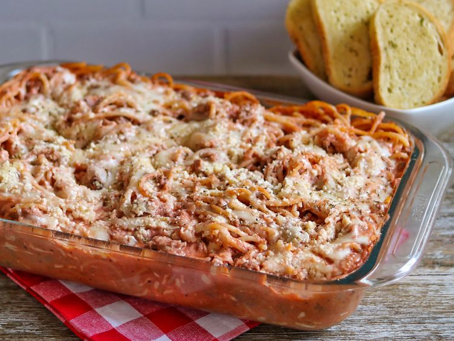

Spaghetti

Description
This easy spaghetti casserole dish with ground beef is deliciously rich, hearty, and cheesy.
This crowd-pleasing spaghetti casserole recipe will satisfy all your comfort food cravings.
Ingredients:
- Spaghetti: This easy dinner starts with a 12-ounce package of spaghetti.
- Cream cheese and sour cream: Cream cheese and sour cream are essential for the creamy casserole.
- Cheeses: You‘ll need shredded part-skim mozzarella cheese and Parmesan cheese.
- Oil: Cook the beef in two tablespoons of olive oil.
- Sirloin: Ground beef takes the heartiness up a notch.
- Onion: An onion lends bold flavor.
- Seasonings: Season the spaghetti casserole with fresh garlic, Italian seasoning, kosher salt, and black pepper.
- Sauce: Use jarred spaghetti or marinara sauce or make your own at home.
Steps
- Boil and drain the spaghetti.
- Cook the beef until lightly browned, then add onion and seasonings.
- Continue cooking until the meat is cooked through, then drain the grease.
- Stir the sauce into the beef mixture, then add the spaghetti and stir until coated in sauce.
- Assemble the spaghetti casserole according to the detailed instructions.
- Bake, covered with foil, for 30 minutes.
- Remove the foil, sprinkle with Parmesan, and broil until the cheese is golden brown.
Home